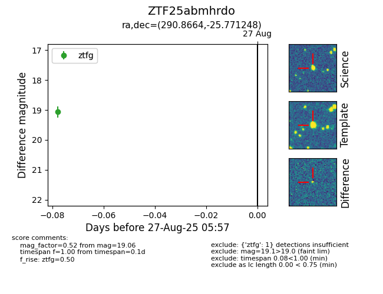

Target ZTF25abmhrdo at 2025-08-27 05:57, see:
FINK: fink-portal.org/ZTF25abmhrdo
Lasair: lasair-ztf.lsst.ac.uk/objects/ZTF25abmhrdo
ALeRCE: alerce.online/object/ZTF25abmhrdo
alt names
ZTF25abmhrdo (ztf,fink)
coordinates:
equatorial (ra, dec) = (290.8664,-25.77125)
galactic (l, b) = (12.6388,-18.05267)
photometry
last ztfg=19.06
1 ztfg detections
